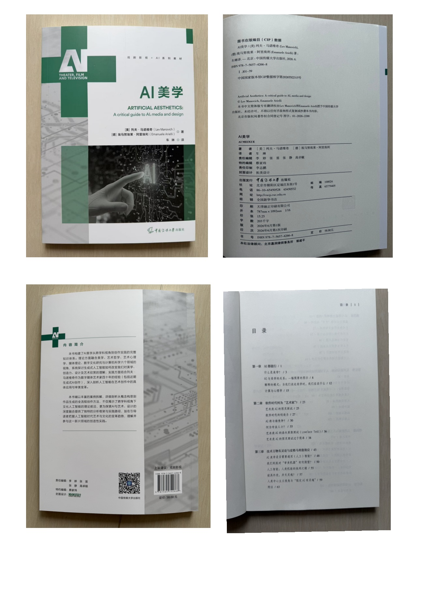
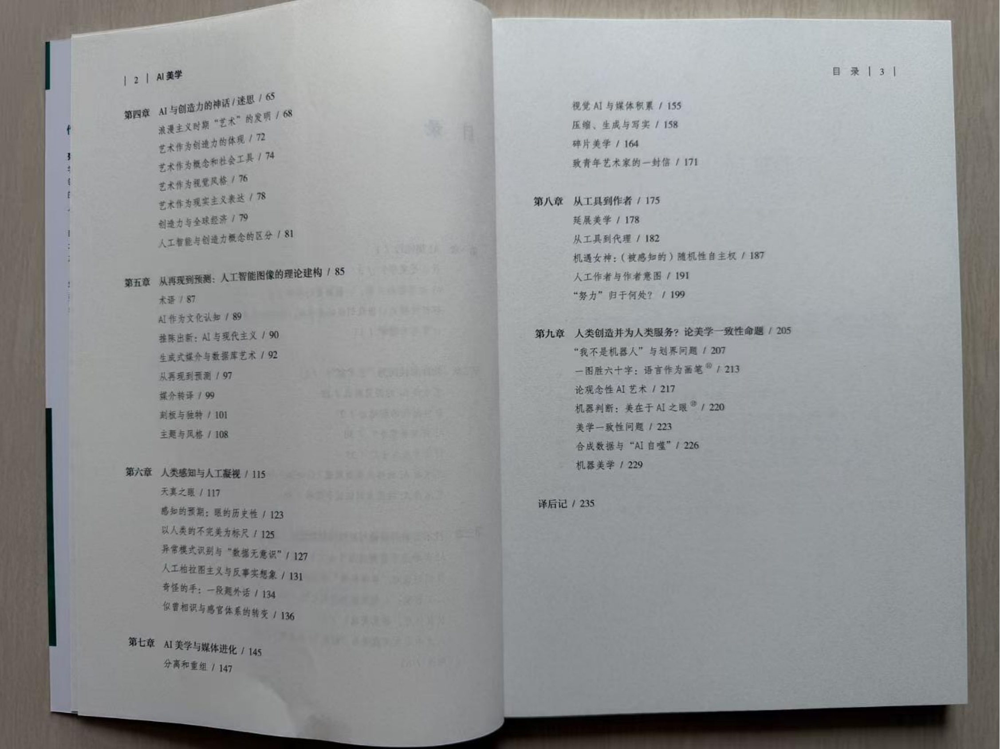

← 返回研究与写作
RESEARCH & WRITING / 01 · 章节翻译与校对
AI美学
我负责第五章「从再现到预测，人工智能图像的理论架构」的翻译与校对。该章从艺术史与媒介理论出发，讨论生成式 AI 如何理解图像、重组视觉文化，以及风格与内容之间的关系。
章节作者：Lev Manovich · 翻译与校对：毕耀匀 · 中国传媒大学出版社
书籍与目录
打开这两页 PDF ↗

RESEARCH & WRITING / 01 · 章节翻译与校对
我负责第五章「从再现到预测，人工智能图像的理论架构」的翻译与校对。该章从艺术史与媒介理论出发，讨论生成式 AI 如何理解图像、重组视觉文化，以及风格与内容之间的关系。
章节作者：Lev Manovich · 翻译与校对：毕耀匀 · 中国传媒大学出版社

